Create: Clockwork
附属模组
把机械动力搬到天上，做成可驾驶的飞行器
这是什么
大型载具系统：飞艇、飞行器、物理化的旋转与推进，配合 Create 的应力驱动。是目前 Create 生态里最完整的空中载具方案。
命名空间：
vs_clockwork 1.20.1 版本：本页物品与配方直接取自该版本的 jar。飞行器部件9
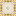
气球机壳vs_clockwork:balloon_casing
气球传动杆vs_clockwork:balloon_encased_shaft
没有工作台/机器配方
气球充气机vs_clockwork:ballooner
没有工作台/机器配方
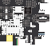
气体推进器vs_clockwork:gas_thruster
简易螺旋桨轴承vs_clockwork:juryrigged_propeller_bearing
控制与导航1
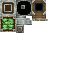
叶片控制器vs_clockwork:blade_controller
其它95
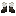
飞行员靴子vs_clockwork:aeronaut_boots
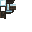
飞行员帽子vs_clockwork:aeronaut_goggles
飞行员夹克vs_clockwork:aeronaut_jacket
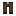
飞行员裤子vs_clockwork:aeronaut_jumpers
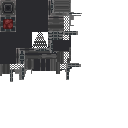
烈焰人再燃器vs_clockwork:afterblazer
没有工作台/机器配方
空气压缩机vs_clockwork:air_compressor
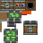
襟翼轴承vs_clockwork:andesite_flap_bearing
调试陨石生成器vs_clockwork:asteroid_block
没有工作台/机器配方
蓝胶vs_clockwork:bluperglue
没有工作台/机器配方
蓝胶球vs_clockwork:bluuguu
没有工作台/机器配方
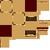
黄铜红石阻尼器vs_clockwork:brass_redstone_resistor
没有工作台/机器配方
高能陨石vs_clockwork:charged_nyx
没有工作台/机器配方
雕纹陨石块vs_clockwork:chiseled_nyx
没有工作台/机器配方
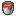
巧克力糖霜桶vs_clockwork:chocolate_frosting_bucket
没有工作台/机器配方
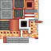
内燃机vs_clockwork:combustion_engine
没有工作台/机器配方
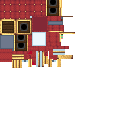
指挥座椅vs_clockwork:command_seat
直升机轴承vs_clockwork:copter_bearing
没有工作台/机器配方
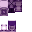
创造气体源vs_clockwork:creative_gas_generator
没有工作台/机器配方
创造模式重力枪vs_clockwork:creative_gravitron
没有工作台/机器配方
输物炮vs_clockwork:delivery_cannon
气体管道vs_clockwork:duct
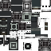
气动活塞vs_clockwork:extendon
软管卷轴vs_clockwork:extendon_hose
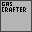
气体合成器vs_clockwork:gas_crafter
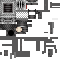
气体喷口vs_clockwork:gas_nozzle
气体储罐vs_clockwork:gas_tank
没有工作台/机器配方
气体通风口vs_clockwork:gas_vent
没有工作台/机器配方
蓝胶黏液块vs_clockwork:goo_block
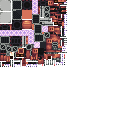
重力枪vs_clockwork:gravitron
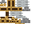
手持式动力钻头vs_clockwork:handheld_drill
没有工作台/机器配方
手持式动力锯vs_clockwork:handheld_saw
没有工作台/机器配方
软管端口vs_clockwork:hose_port
软管卷轴（半成品）vs_clockwork:incomplete_hose_spool
没有工作台/机器配方
万向传动杆（半成品）vs_clockwork:incomplete_telescoping_mechanism
没有工作台/机器配方
漫游之杖（半成品）vs_clockwork:incomplete_wanderwand
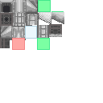
进气管vs_clockwork:intake
没有工作台/机器配方
陨石块vs_clockwork:nyx
没有工作台/机器配方
陨石砖vs_clockwork:nyx_bricks
没有工作台/机器配方
陨石砖台阶vs_clockwork:nyx_bricks_slab
没有工作台/机器配方
陨石砖楼梯vs_clockwork:nyx_bricks_stairs
没有工作台/机器配方
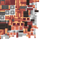
糕点制作机vs_clockwork:pastrymaker
没有工作台/机器配方
物理注入器vs_clockwork:physics_infuser
反作用飞轮vs_clockwork:reactionwheel
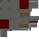
红石阻尼器vs_clockwork:redstone_resistor
螺丝刀vs_clockwork:screwdriver
便携式密封器vs_clockwork:sealer
没有工作台/机器配方
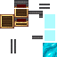
物理结构黏着器vs_clockwork:slicker
没有工作台/机器配方
平滑陨石块vs_clockwork:smooth_nyx
没有工作台/机器配方
平滑陨石台阶vs_clockwork:smooth_nyx_slab
没有工作台/机器配方
平滑陨石楼梯vs_clockwork:smooth_nyx_stairs
没有工作台/机器配方
平滑漫游水晶块vs_clockwork:smooth_wanderlite
没有工作台/机器配方
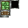
对接口vs_clockwork:spinoff_bearing
同温层甜甜圈vs_clockwork:stratodonut
没有工作台/机器配方
草莓糖霜桶vs_clockwork:strawberry_frosting_bucket
没有工作台/机器配方
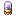
三极管vs_clockwork:triode
没有工作台/机器配方
万向传动杆节点vs_clockwork:universal_shaft
万向传动杆vs_clockwork:universal_shaft_item
香草糖霜桶vs_clockwork:vanilla_frosting_bucket
没有工作台/机器配方
深层漫游矿石vs_clockwork:wanderlite_deepslate_ore
没有工作台/机器配方
末地漫游矿石vs_clockwork:wanderlite_end_ore
没有工作台/机器配方
陨石漫游矿石vs_clockwork:wanderlite_nyx_ore
没有工作台/机器配方